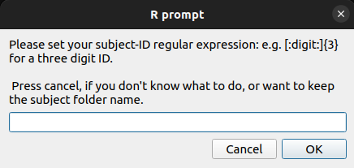
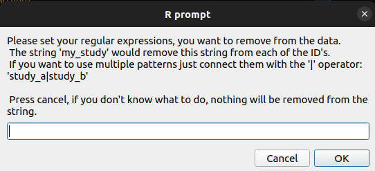
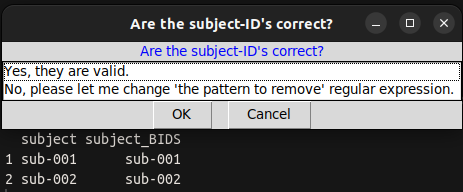

subject-ID cleaning
The input folder name serves as the subject-ID. In the absence of a regular expression, the subject-ID is unaltered.
Regular expression: subject-ID

The subject-ID is extracted from the input string using this regular expression. If all of your files had a well established naming convention, you could use this.
subject-ID |
regular expression |
described in words |
output subject-ID |
|---|---|---|---|
01234 |
[:digit:]{5} |
5 digits |
sub-01234 |
Control2132 |
(Control|Patient)[:digit:]{4} |
“Control” OR “Patient” followed by 4 digits |
sub-Control2132 |
Patient0123_test |
(Control|Patient)[:digit:]{4} |
sub-Patient0213 |
|
abcd0123 |
[:alpha:]{4}[:digit:]{4} |
4 letters and 4 digits |
sub-abcd0123 |
pilot_sdfjd3222 |
[:alpha:]{4}[:digit:]{4} |
sub-sdfjd3222 |
|
adc932d |
[:alnum:]{5,7} |
between 5 to 7 alphanumeric (letters, digits) |
sub-adc932d |
23d49 |
[:alnum:]{5,7} |
sub-23d49 |
Examples of subject-ID regular expressions
Regular expression: pattern to remove

The pattern_to_remove regular expression simply removes the regular expression(s) from the subject-ID.
subject-ID |
regular expression |
described in words |
output subject-ID |
|---|---|---|---|
02313_bidirect |
_(bidirect|BiDirect|Bidiect) |
“_” followed by “bidirect”, “BiDirect” or “BiDiect” |
sub-02313 |
03211_BiDirect |
_(bidirect|BiDirect|Bidiect) |
sub-03211 |
|
02111_Bidiect |
_(bidirect|BiDirect|Bidiect) |
sub-02111 |
|
test0111 |
test|study_a_ |
“test” or “study_a_” |
sub-0111 |
study_a_1111 |
test|study_a_ |
sub-1111 |
|
pre9222post |
pre|post|suffix|prefix |
as in the cell above |
sub-9222 |
suffix223prefix |
pre|post|suffix|prefix |
sub-223 |
Examples of ‘patterns to remove’ regular expressions
